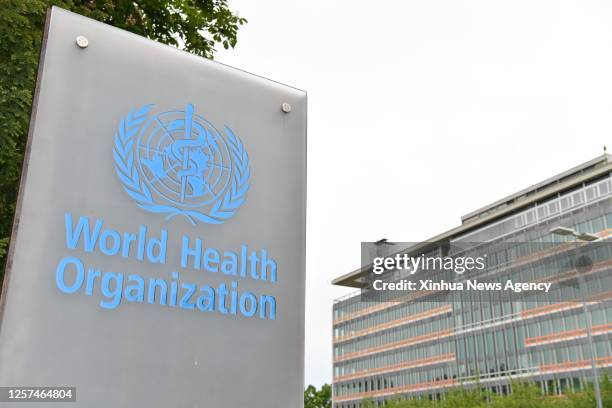
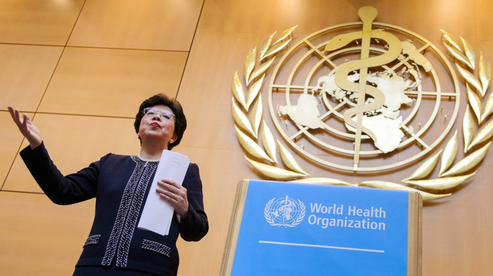

KERJASAMA MULTILATERAL: WHO
- World Health Organization (WHO) adalah lembaga di bawah Perserikatan Bangsa-Bangsa (PBB) yang didirikan pada tahun 1948. WHO memiliki tujuan untuk meningkatkan kesehatan masyarakat di seluruh dunia dan membantu negara-negara dalam menangani masalah kesehatan. Organisasi ini berfokus pada berbagai isu kesehatan, termasuk penyakit menular, gizi, kesehatan mental, dan akses terhadap layanan kesehatan yang berkualitas. Dengan melibatkan negara-negara anggota, WHO berusaha menciptakan dunia yang lebih sehat dan aman bagi semua orang.
- Tujuan utama WHO adalah untuk mencapai tingkat kesehatan yang setinggi-tingginya untuk semua orang di seluruh dunia. Salah satu cara WHO melakukan ini adalah dengan memberikan pedoman dan standar kesehatan yang harus diikuti oleh negara-negara. WHO juga bekerja sama dengan negara-negara dalam menghadapi wabah penyakit, seperti COVID-19, dengan menyediakan informasi, bantuan teknis, dan vaksin. Selain itu, WHO membantu negara-negara dalam mengembangkan sistem kesehatan yang lebih baik melalui pelatihan dan pertukaran pengetahuan. Kerja sama ini sangat penting karena banyak masalah kesehatan yang tidak mengenal batas negara dan memerlukan kolaborasi global untuk diatasi.
- Indonesia aktif berpartisipasi dalam berbagai program dan inisiatif WHO untuk meningkatkan kesehatan masyarakat. Sebagai contoh, Indonesia bekerja sama dengan WHO dalam program imunisasi untuk mencegah penyakit menular, seperti polio dan campak. Selain itu, Indonesia juga terlibat dalam penelitian dan pengembangan kebijakan kesehatan yang berbasis bukti untuk mengatasi tantangan kesehatan di dalam negeri. Dalam konteks global, Indonesia juga berkontribusi pada diskusi dan pertemuan WHO untuk berbagi pengalaman dan praktik terbaik dalam meningkatkan sistem kesehatan. Dengan peran aktif ini, Indonesia berharap dapat membantu meningkatkan kesehatan masyarakat tidak hanya di dalam negeri tetapi juga di seluruh dunia.
 